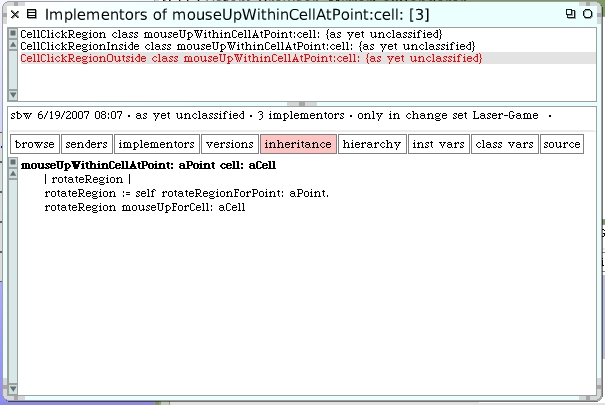
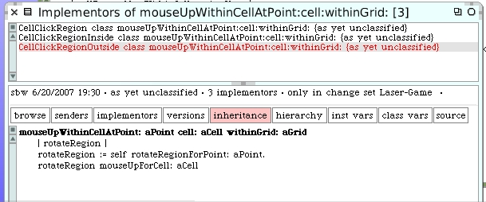
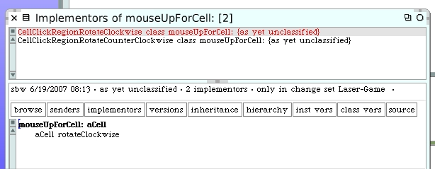
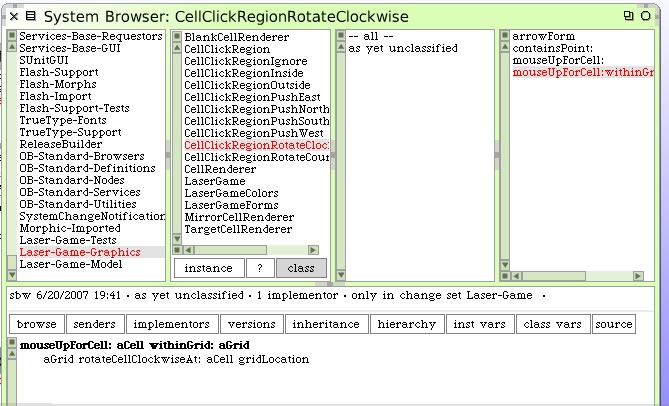
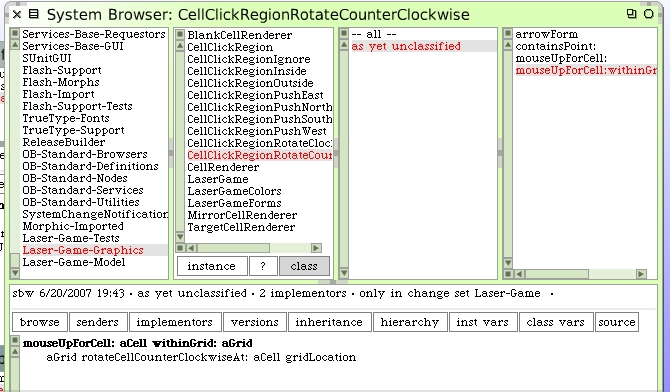
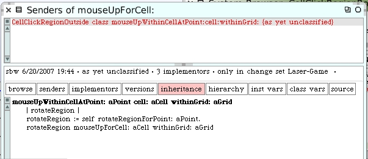
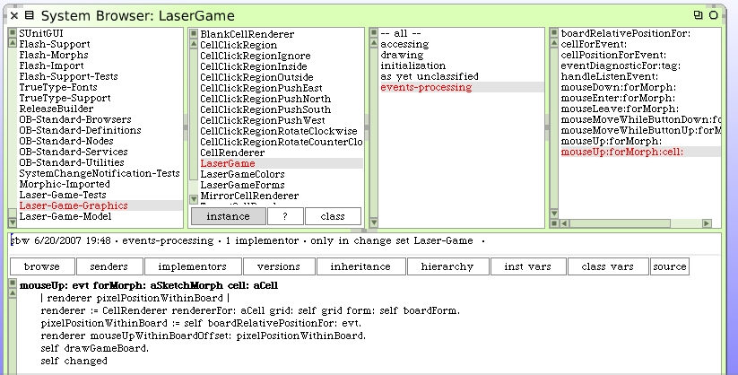

The next change we need to make is to have the cell rotate messages include the grid. Let's take a look at the mouse-up code, where it all begins, in the LaserGame morph.
mouseUp: evt forMorph: aSketchMorph cell: aCell
| renderer pixelPositionWithinBoard |
renderer := CellRenderer rendererFor: aCell grid: self grid form: self boardForm.
pixelPositionWithinBoard := self boardRelativePositionFor: evt.
renderer mouseUpWithinBoardOffset: pixelPositionWithinBoard.
self changed
The LaserGame object has an instance variable for the grid so we could modify the #mouseUpWithinBoardOffset: to include an additional argument of the grid. Before we do that we should look at the CellRenderer class.
Object subclass: #CellRenderer
instanceVariableNames: 'cellLocation grid targetForm'
classVariableNames: ''
poolDictionaries: ''
category: 'Laser-Game-Graphics'
The renderers also know about the grid. So we don't need to include it as an argument to our #mouseUpWithinBoardOffset: message after all. Have a look at the #mouseUpWithinBoardOffset: instance method on the MirrorCellRenderer class.
mouseUpWithinBoardOffset: aPoint
| cellPosn offsetWithinCell regionClass |
cellPosn := self offsetWithinGridForm.
offsetWithinCell := aPoint - cellPosn.
regionClass := CellClickRegion clickRegionForPoint: offsetWithinCell.
regionClass mouseUpWithinCellAtPoint: offsetWithinCell cell: self cell.
self redrawCell
The region class hierarchy doesn't contain any information about grids. So here's where we would begin to pass along the grid as an argument in our method calls. The #mouseUpWithinCellAtPoint:cell: method will have to change. There are 3 implementers of this method. Each will have to be replaced with a new method.
Let's create these 3 new methods right away and then change the renderer code to use them instead. After that we'll delete the old unused methods. Here's the new class method on the CellClickRegion class.
mouseUpWithinCellAtPoint: aPoint cell: aCell withinGrid: aGrid
Here's the new class method for the CellClickRegionInside class.
mouseUpWithinCellAtPoint: aPoint cell: aCell withinGrid: aGrid
| pushRegion |
pushRegion := self pushRegionForPoint: aPoint.
Note that we're not going to do anything with the inside click region and this new parameter just yet. Most importantly, here's the new class method for our CellClickRegionOutside class.
mouseUpWithinCellAtPoint: aPoint cell: aCell withinGrid: aGrid
| rotateRegion |
rotateRegion := self rotateRegionForPoint: aPoint.
rotateRegion mouseUpForCell: aCell
Now we use this new method back on the MirrorCellRenderer class. Here's the modification to our existing instance method.
mouseUpWithinBoardOffset: aPoint
| cellPosn offsetWithinCell regionClass |
cellPosn := self offsetWithinGridForm.
offsetWithinCell := aPoint - cellPosn.
regionClass := CellClickRegion clickRegionForPoint: offsetWithinCell.
regionClass mouseUpWithinCellAtPoint: offsetWithinCell cell: self cell withinGrid: self grid.
self redrawCell
After we have made this change we can go back and look for senders of the old #mouseUpWithinCellAtPoint:cell: method. There shouldn't be any. When you've confirmed that, you can then delete the 3 old implementers.
We're now ready to push the grid argument further until we get to the code that actually does the rotation. Here's the code for the CellClickRegionOutside where we need to do our next work.
The #mouseUpForCell: methods are the next to be changed. You can see this is where the work needs to happen.
Here are the 2 new class methods.

Go back and call these new methods...
Then, after confirming there are no longer any senders of the old #mouseUpForCell: methods, delete them. There's one last change. Since we're not impacting other cells on the board we need to redraw whenever someone changes a cell now. Here's the modified method.
Open up a LaserGame morph and try it out. You can rotate a cell while the laser is active and it works as we expect. For fun, don't forget to try and rotate the cells on the bottom row and watch the target cell state change. We'll want to deal with the idea of prohibiting cell changes while the laser beam is active later on in our development work.
This is another good breaking point to save your image.